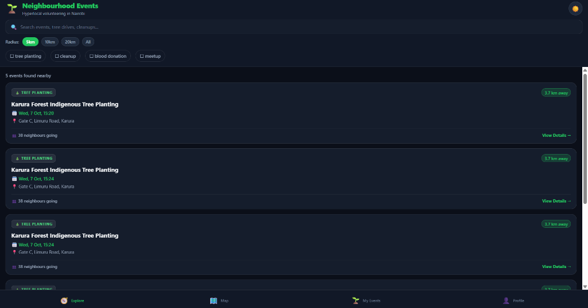

Empowering Grassroots Action Across Nairobi's Neighbourhoods
Discover tree-planting drives in Karura Forest, urgent blood donation camps, river cleanup sweeps, and neighbourhood eco-meetups. Designed to work flawlessly offline with SQLite sync, GPS radius discovery, and Obsidian dark mode.
Live Hyperlocal Nairobi Explorer
Interact with the reactive feed below. Filter by distance, select your Nairobi anchor location, toggle simulated offline mode, and test instant RSVP state changes.
Your Nairobi Location
Select an anchor location to see distances recalculate via Haversine:
Network & Sync Engine
Crafted for Nairobi’s Eco-Champions
Explore screen running in Obsidian Dark Mode with real seed events, search, category chips, and radius filters.

Figure: Native Expo Router UI with Obsidian Dark palette (#0B0F19), real-time distance pills, and attendee status.
Offline-First Synchronization Engine
Designed to bridge offline mobile clients with a scalable cloud backend via bi-directional changeset synchronisation.
WatermelonDB Core
- SQLite storage adapter on Android & iOS
- LokiJS IndexedDB adapter for Web fallback
- Lazy model evaluation for ultra-smooth 60fps
- Observable queries updating UI automatically
Bi-Directional Engine
/sync/pullqueries modified records since timestamp/sync/pushuploads queued local mutations- Conflict resolution preferring server authoritativeness
- Automatic retry queue when re-entering cellular coverage
Express + Prisma
- PostgreSQL 16 relational database persistence
- Prisma ORM for strict schema & migrations
- Expo Push Gateway fan-out service
- Full Docker Compose local dev stack
// GET /sync/pull?lastPulledAt=1697280000000
// Express Backend -> WatermelonDB Client
{
"changes": {
"events": {
"created": [
{
"id": "evt_karura_99",
"title": "Karura Indigenous Tree Planting",
"category": "tree_planting",
"latitude": -1.2405,
"longitude": 36.8344,
"address": "Sigiria Gate, Limuru Rd",
"capacity": 120,
"rsvpCount": 69,
"startsAt": 1697878800000
}
],
"updated": [],
"deleted": []
},
"rsvps": {
"created": [{ "id": "rsvp_usr_01", "eventId": "evt_karura_99", "status": "confirmed" }],
"updated": [],
"deleted": []
}
},
"timestamp": 1697281452000
}Get Started in 3 Steps
Run both client and backend locally using Node.js and Docker Compose.
Start PostgreSQL Database
Launch the containerized Postgres database using Docker Compose from repository root.
docker-compose up -d postgresRun Backend API
Push Prisma database schema and start the Express sync server on port 4000.
cd backend
npm install
npx prisma db push
npm run devLaunch Expo Client
Install mobile frontend dependencies and launch the Expo development server.
npm install
npm start
# Press 'w' for web or 'a' for Android